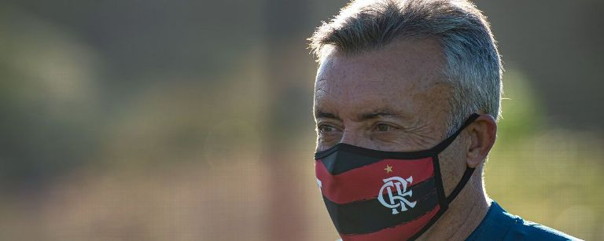
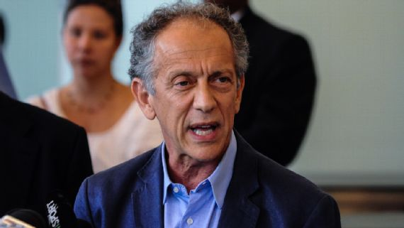

Noticias atuais!!!
Torrent testa Gustavo Henrique e deve escalar o zagueiro contra o Atlético-GO

Na zaga, Torrent testou Gustavo Henrique ao lado de Rodrigo Caio. Com isso, Léo Pereira treinou entre os reservas.
No restante, o Flamengo deve ser o mesmo da derrota para o Atlético-MG na estreia. O lateral esquerdo Filipe Luís participou da atividade, mas vem sentindo dores na panturrilha. Com isso, Renê está de sobreaviso e Ramon viajou com a delegação.
A boa notícia foi a presença do meia Diego. O jogador ficou de fora da estreia na Série A por conta de uma gastroenterite.
A delegação do Flamengo viajou em voo fretado para Goiânia.
O clube aumentou a rigidez no protocolo de saúde após os casos positivos no elenco do Goiás no último fim de semana.
Secretário da CBF descarta parar Brasileiro e quer seguir com regulamento de 38 rodadas

Em entrevista à FOX Sports, na noite desta terça-feira, o secretário-geral da CBF, Walter Feldman, descartou a paralisação do Campeonato Brasileiro em meio aos muitos casos de contaminações de atletas pelo coronavírus.
De acordo com o dirigente, o número de partidas afetadas por casos de COVID-19, e, por enquanto, não
há motivo para o torneio ser parado ou ter seu regulamento alterado.
"Em nenhum momento passou por nós qualquer perspectiva de paralisação, porque não há motivo para isso", assegurou.
"Neste momento, não nos parece relevante, e a dimensão dos acontecimentos ainda não foi suficiente para que tivéssemos que pensar num 'plano B', como encurtamento do campeonato, redução das 38 rodadas ou mover todos os clubes para um só local, como outros países fizeram", afirmou.
Segundo Feldman, aliás, a manutenção do Brasileiro com 38 rodadas é um pedido dos próprios clubes, que temem por sua saúde financeira.
"Nós mantivemos reuniões com os clubes, que pediram à CBF que tentasse ao máximo possível conservar as 38 rodadas, para que a gente pudesse manter os comprimissos de contratos com as detentoras dos direitos de televisão, tendo em vista que encerramos o fluxo de entrada de bilheteria e tivemos muita redução na área de patrocinadores", apontou.
"Vocês sabem muito bem que a situação dos clubes é muito difícil, vários deles com dificuldades a curto prazo, Profut, fair play financeiro... Tudo isso foi muito bem analisado. Imaginamos que, se o campeonato tivesse 38 rodadas, isso daria fôlego para que eles pudessem superar um ano tão difícil", argumentou.
"Havia um apelo para que isso acontecesse. Eu diria que os primeiros movimentos são difíceis, nós (da CBF) entendemos as críticas, são bem-vindas, não respondemos com mágoa ou linha-dura. Nós compreendemos. A saúde deve sempre estar em primeiro lugar, mas temos tudo pensado para as alternativas necessárias se os problemas forem se acumulando", garantiu.
A CBF planejou o Campeonato Brasileiro até o final de fevereiro de 2021.